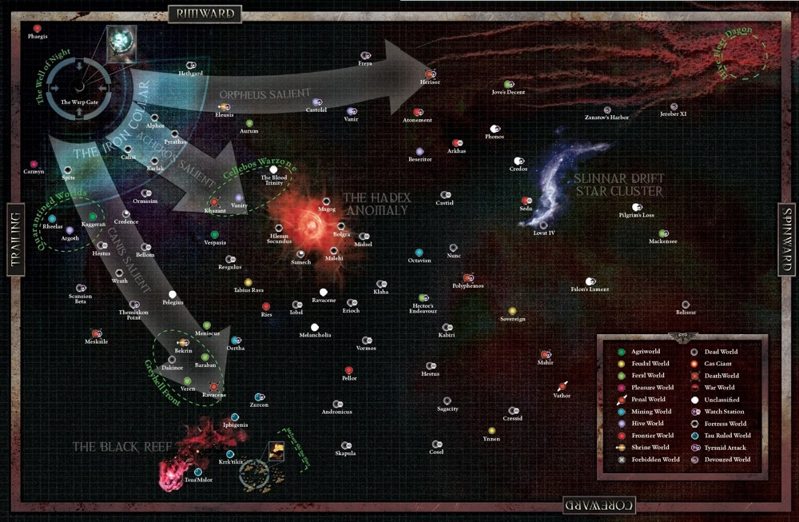

Jericho Reach
| Jericho Reach | |
|---|---|
 Chart of the Jericho Reach, showing the Achilus Crusade's salients and the Warp Gate Artwork © Games Workshop | |
| Type | Lost Imperial sector, reclaimed as a warzone |
| Segmentum | Ultima Segmentum, Eastern Fringe |
| Sector capital | None since the sector was dissolved in 889.M36 |
| Sub-sectors | Orpheus Salient, Acheros Salient, Canis Salient, Cellebos Warzone, Charon Stars, Greyhell Front, Outer Reach, Velk'Han Sept |
| Notable worlds | Erioch, Heliotrope, Vanir, Blood Trinity, Velk'Han, Castobel, Aurum |
| Governing body | The Achilus Crusade under the Lord Militant; the Deathwatch at Watch Fortress Erioch |
| Status (as of M42) | Contested by the Achilus Crusade, Chaos, the T'au Empire and Hive Fleet Dagon |
The Jericho Reach, once known as the Jericho Sector, is a region of space on the Eastern Fringe of the Ultima Segmentum. It was part of the Imperium of Mankind from the Great Crusade onwards, until it fell into isolation, decay and corruption in the Age of Apostasy. It was formally dissolved as a sector in 889.M36, and it has been lost to the Imperium for more than four thousand standard years.[1]
Many of its worlds were tainted by Chaos, and others were infested by xenos. At the heart of the Reach, a domain of Daemon Princes and Chaos Lords is said to have grown up, where the laws of the Warp rather than those of realspace govern space and time. The Achilus Crusade, launched in 777.M41, is the Imperium's attempt to retake the Reach, and it has been fought on several fronts ever since.[1]
History
[edit]Great Crusade
[edit]The volume of space later called the Jericho Reach was conquered during the Great Crusade (798.M30–005.M31), by Imperial fleets chiefly from the Ultramarines and the Night Lords Legions. The region was sparsely settled by pre-Imperial Humanity, but many of its systems had life-sustaining worlds, and the Crusade set up a sector government there.[1][a]
Age of Apostasy
[edit]The fall of the Jericho Sector followed the seizure of power by Goge Vandire during the Age of Apostasy (c. 100–600.M36). Vandire placed the sector under two puppet governors, the Lady Sector Castagar Murella and the Arch-cardinal Udo Asterus, whose authority was enforced by the Navis Imperialis and the Frateris Templar. Local commanders resisted, and the sector was cut off by warp storms soon afterwards.[1]
The Age of Shadows
[edit]From 37.M36 to 41.M41, darkness and dissolution spread through the sector. The Administratum declared the sector a political entity no more in 889.M36, and the region reverted to the name Jericho Reach. Its records are fragmentary, and the Deathwatch has maintained the only continuous Imperial presence there.[1]
In 380–405.M37 an Ork freebooter fleet of more than one hundred voidships ravaged the north of the Reach, attacking Castobel, Aurum and Alphos. Deathwatch Codicier Kiataino destabilised the Ork forces before they could settle, and they were driven off.[1]
The Achilus Crusade
[edit]The discovery of the stable Jericho-Maw Warp Gate, which links the Calixis Sector to the Reach, made a crusade possible. The High Lords of Terra ordered the Achilus Crusade in 777.M41 under Tiber Achilus, a Lord Militant who did not live to see its first decade out. The crusade was mustered from the Astra Militarum, the Adeptus Astartes, the Adepta Sororitas and a large Navis Imperialis fleet, and it was launched under strict secrecy from a staging point far from the Reach.[1]
The Canis Salient opened the Greyhell Front in 785.M41 against the T'au-held domains of the Velk'Han Sept in the Black Reef. The crusade has been fought over three fronts since, and it has been met by the Hadex Anomaly, the Chaos domains of the Reach and the newly arrived Hive Fleet Dagon, which seeks to consume every inhabited world in the Reach.[1]
Geography
[edit]The Reach is organised around the Well of Night, a region of unstable space at the Warp Gate, and the Iron Collar, a belt of reclaimed systems that the crusade holds. Its salients are named for the Imperial commands that advance into them. The Orpheus Salient runs towards the northern edge of the Reach, the Acheros Salient lies near the Hadex Anomaly, and the Canis Salient pushes south towards the Black Reef.[1]
The Hadex Anomaly is a region of warped space in the Reach's centre. Its stars lie in a dense red nebula, and Imperial ships have been lost there in large numbers. The Cellebos Warzone and the Charon Stars are the most heavily fought areas of the Reach, and the Outer Reach is largely unexplored.[1]
Notable worlds
[edit]Erioch is a system of the Deathwatch, whose Watch Fortress Erioch holds the Reach's records and its Meageran Data-Looms. Vanir is a system of the Orpheus Salient. Velk'Han is the T'au-held sept of the Black Reef, and Castobel and Aurum were the Ork targets of 380–405.M37.[1]
The Blood Trinity is a named system in the Cellebos Warzone, where the crusade's campaigns have been among its most costly.[1]
Governance
[edit]There is no sector government in the Reach. The Achilus Crusade is run by a Lord Militant under the High Lords of Terra, and each salient is governed by the Imperial commander who holds it. Civil rule in reclaimed worlds falls to the Administratum, which appoints governors as worlds are retaken.[2]
The Deathwatch keeps its own watch in the Reach from Watch Fortress Erioch, and its Battle-Brothers act with the crusade under their own command. The Inquisition is present through agents of the Ordo Malleus and the Ordo Hereticus, who investigate the Chaos domains.[3]
Military
[edit]The crusade's forces include the Imperial Guard regiments of the Astra Militarum, Space Marine companies of several Chapters, Adepta Sororitas convents and a Navis Imperialis battlefleet. The T'au Empire has also sent fleets into the Reach, and it has contested the Velk'Han Sept with the Imperium since 785.M41.[4]
Hive Fleet Dagon, a Tyranid force that entered the Reach from the void, has forced the crusade to fight on a further front against the Great Devourer.[1]
Timeline
[edit]| Date | Event |
|---|---|
| 798.M30–005.M31 | The Great Crusade conquers the Reach |
| c. 100–600.M36 | Goge Vandire places the Jericho Sector under puppet governors during the Age of Apostasy |
| 889.M36 | The Administratum dissolves the Jericho Sector; the region is again called the Jericho Reach |
| c. 380–405.M37 | An Ork freebooter fleet ravages the north of the Reach |
| M37–M41 | The Deathwatch maintains the Imperium's only continuous presence in the Reach |
| 777.M41 | The Jericho-Maw Warp Gate is found and the Achilus Crusade is launched under Tiber Achilus |
| 785.M41 | The Canis Salient opens the Greyhell Front against the Velk'Han Sept |
| c. 786.M41 | Tiber Achilus dies before the end of the crusade's first decade[b] |
| M42 | Hive Fleet Dagon enters the Reach; the crusade fights on four fronts |
| Era Indomitus | The Chaos domain at the Reach's heart continues to resist the Achilus Crusade |